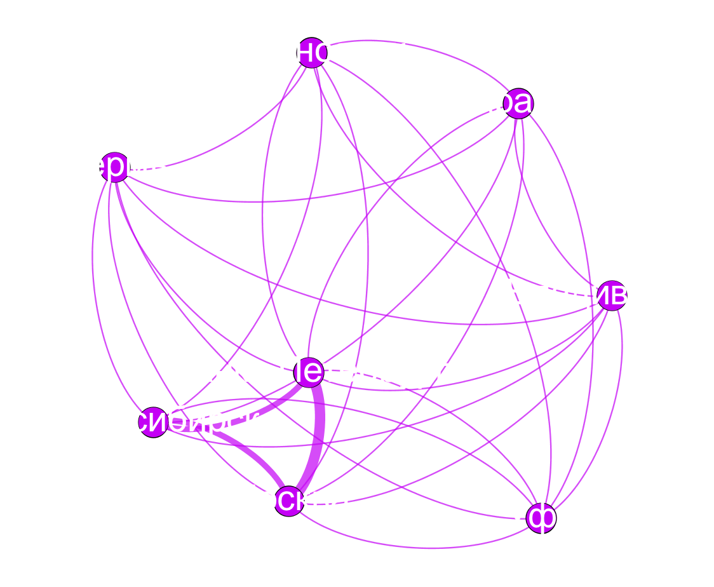
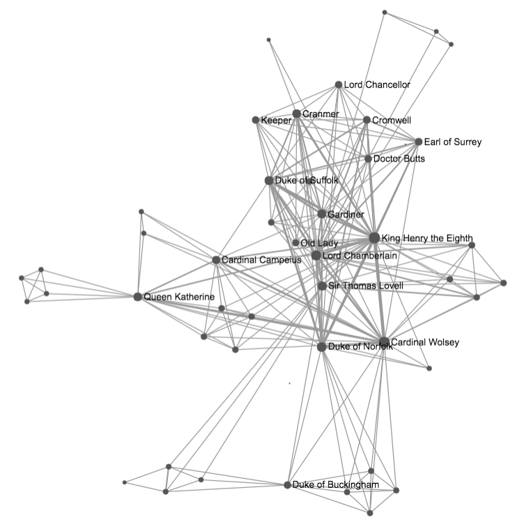
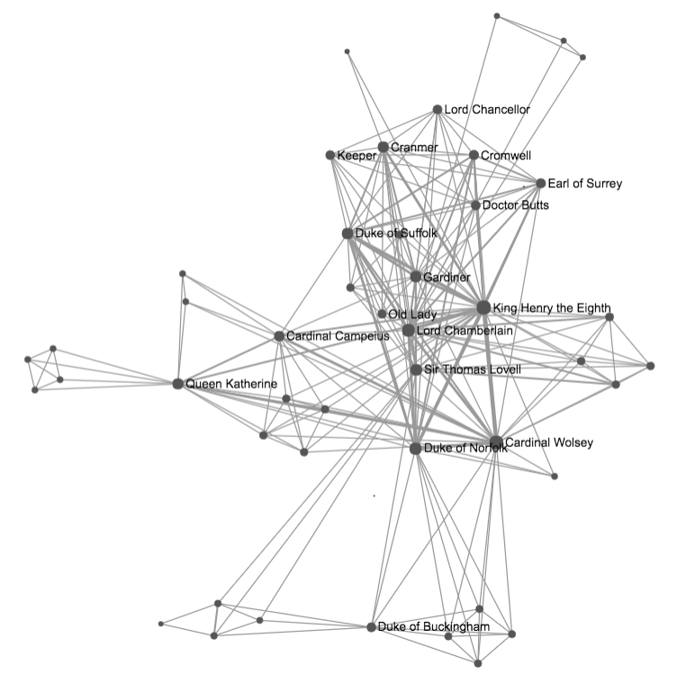
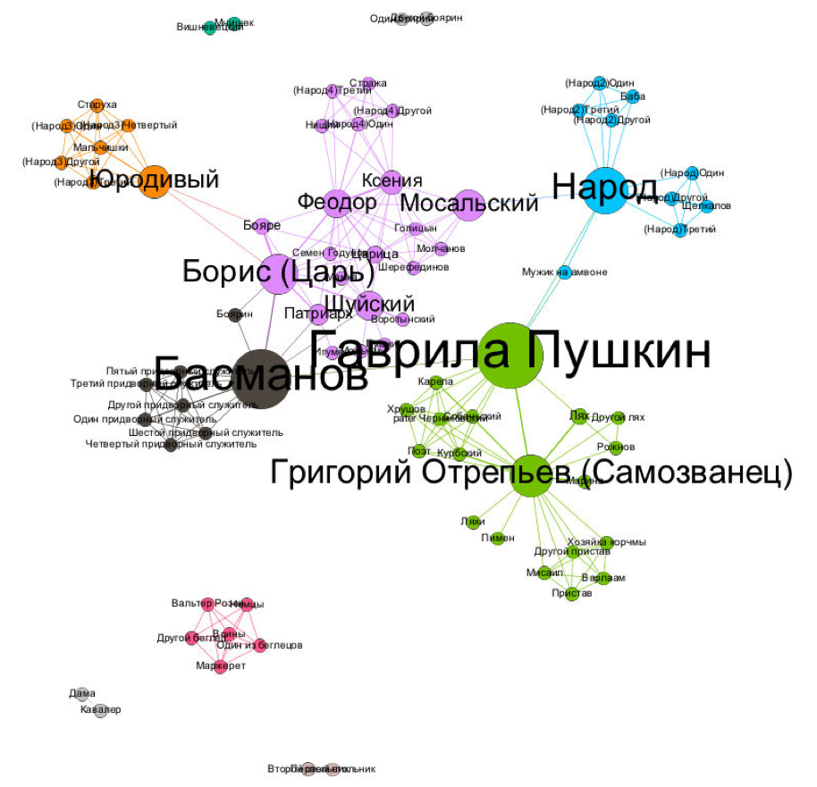
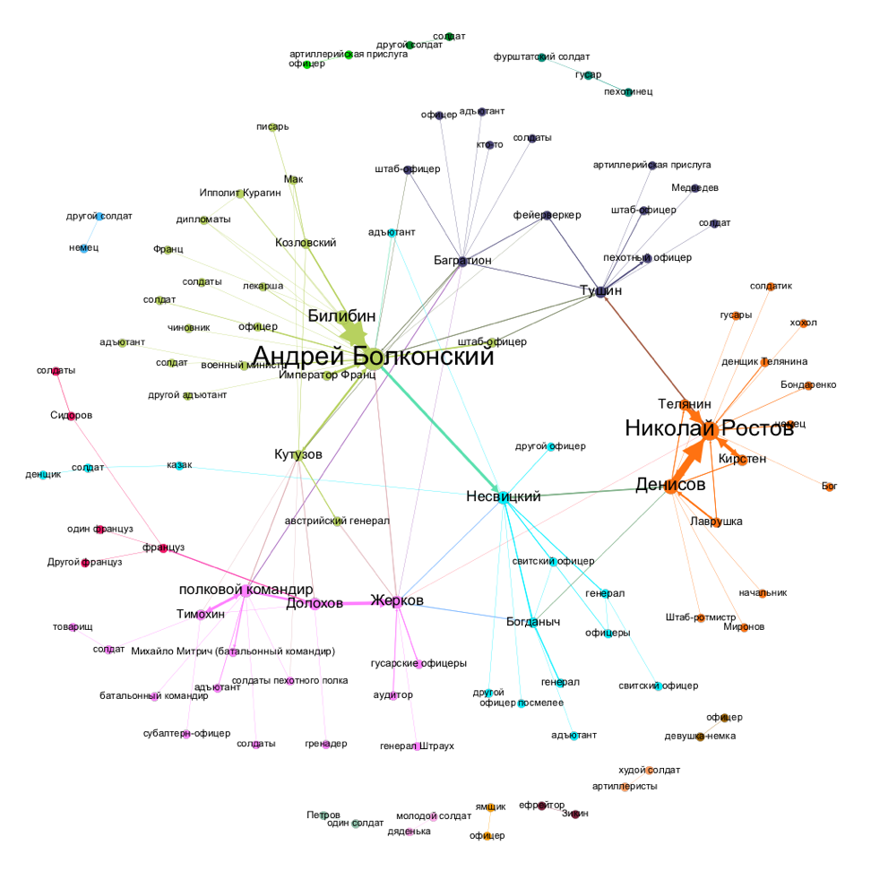
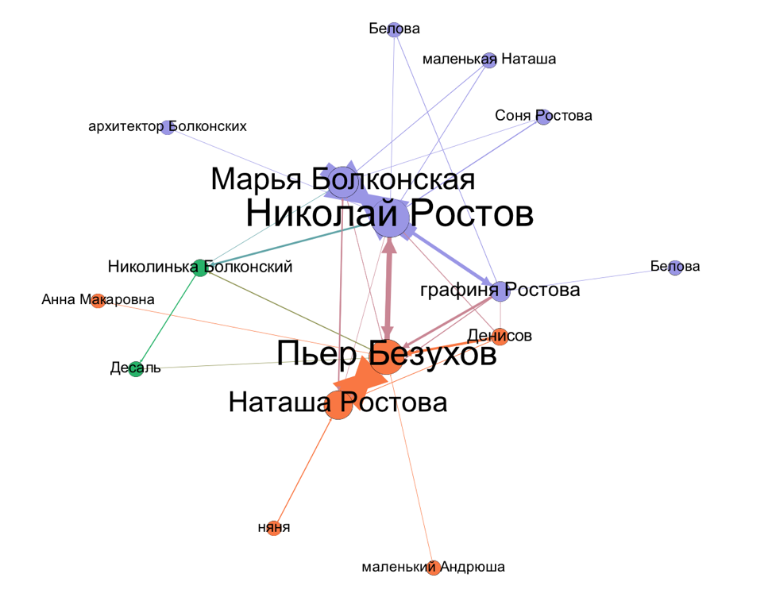

Сетевой анализ художественной литературы
Даниил Скоринкин
dskorinkin@hse.ru

Презентация доступна онлайн:
Что за сетевой анализ?
Теория графов

Сеть (граф)

состоит из узлов...

...и ребер

Сеть (граф)

Может служить моделью для многого
Может служить моделью для многого

Может служить моделью для многого

Может служить моделью для многого

Соц. антропологи приносят сети в литературоведение
Schweizer T., Schnegg M. Die soziale Struktur der. „Simple Storys“: Eine Netzwerkanalyse. 1998

Социальные сети у Шекспира
Stiller J., Nettle D., Dunbar R.I.M. The small world of Shakespeare’s plays. // Human nature. 2003. 14/4. С. 397–408.

"Мир тесен", или те самые шесть рукопожатий

Что показал сетевой анализ вселенной Marvel?
Alberich, R., Miro-Julia, J., Rossello, F. Marvel universe looks almost like a real social network. 2002.
P. M. Gleiser. How to become a superhero. Journal of Statistical Mechanics: Theory and Experiment, (09):P09020, 2007.

Сравнение сетей 60 британских романов
Elson, D. K., Dames, N. and McKeown, K. (2010), Extracting Social Networks from Literary Fiction, Proceedings of ACL 2010, Uppsala, Sweden.

Подключаются филологи!

Moretti F. Network theory, Plot analysis (2011)
Моретти ищет "зону смерти" в Гамлете
Франко Моретти, «Теория сетей и анализ сюжета»
Моретти о раскрытии роли Горацио через сети
Though Horatio is an old fixation of mine, I had never fully understood his role in Hamlet until I looked at the play’s network structure.
Franco Moretti. “Distant Reading”

Проверим:
| Персонаж | Степень | Промежуточность (betweenness) |
|---|---|---|
| Гамлет | 19 | 219,4 |
| Король (Клавдий) | 16 | 131,6 |
| Горацио | 14 | 176,7 |
Визуализируем:


Главная идея Моретти — "дальнее" чтение (distant reading)
Literature scholars should stop reading books and start counting, graphing, and mapping them instead
Moretti, 2005
Масштабирование исследований

тут и глазами можно что-то ухватывать

тут и глазами можно что-то ухватывать

Гете и Шекспир
 

А можно измерять формальные показатели
например, плотность сети


Плотность = 0.5 (3/6) Плотность = 1 (6/6)
Плотности комедии и трагедии отличаются

Теперь это можно делать на русском материале!

Встречайте RusDraCor!

rus.dracor.org
(Shiny RusDraCor)

Плотности комедий и не-комедий

Осторожно, предварительные данные!
Интересно, а какие русские пьесы обладают свойствами "малого мира"?

Приглядимся к Борису Годунову

Примерно как с Гете
Классицизм против "шекспировской пьесы"


От макро- обратно к микроанализу
Важный ли герой Гаврила Пушкин?

Пушкин на посылках и betweenness centrality
Битяговский (двойной агент)

Битков (соглядатай/двойник Пушкина)

Несколько слов о "Войне и мире"
Целиком (too much)
Том 1 часть 1

Том 1 часть 2
"Промежуточность" адъютантов!

Том 2 часть 1 (домашний "Ростовский мир")
Том 3 часть 2 (Бородинское сражение)

Эпилог
Динамика плотности

Анализ социальных сетей
Начало в 1930-е: Курт Левин, Джейкоб (Якоб) Морено
Moreno J. Who Shall Survive: A New Approach to the Problem of Human Interrelations. Washington: Nervous and Mental Disease Publishing Co. 1934
Анализ социальных сетей
Манчестерская школа антропологии (Макс Глакман и другие) в 1950-е
Гарвардский прорыв (Harvarв Breakthrough) в 1960-е
Степень (degree) узла
Степень A = 5
Центральность по посредничеству (betweenness centrality)
http://schochastics.net/sna/periodic.html
Извлечение сообществ: Karate Club
Извлечение сообществ: Karate Club
Матрица (таблица) связей — исходные данные Зэкэри
Сеть связей в клубе
из статьи Зэкэри
Моя визуализация сети Karate Club
Итого: 2 важных применения сетей